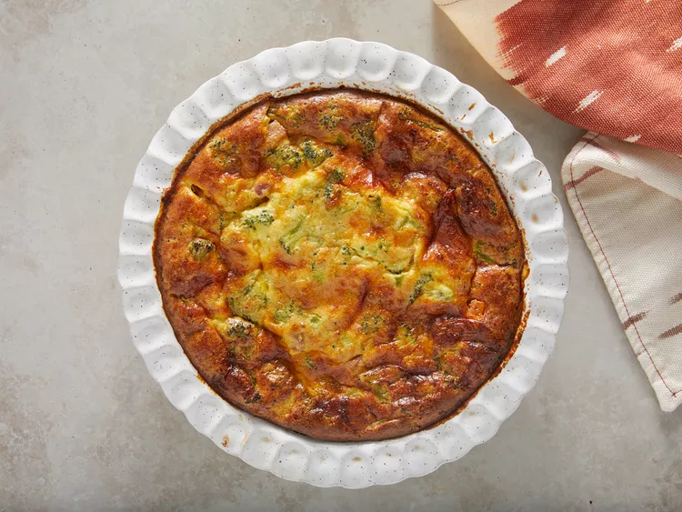

Quiche

Description
Here's a quiche recipe I found on the internet
Ingredients
- 2 cups milk
- 4 large eggs
- 1 cup grated Parmesan cheese
- 3/4 cup biscuit baking mix
- 1/4 cup butter, softened
- 1 (10 ounce) package chopped frozen broccoli, thawed and drained
- 8 ounces shredded Cheddar cheese
- 1 cup cubed cooked ham
Steps
- Preheat the oven to 375 degrees F (190 degrees C). Lightly grease a 10-inch quiche dish.
- Beat milk, eggs, Parmesan cheese, baking mix, and butter in a large bowl until well combined; batter will be lumpy. Stir in broccoli, Cheddar cheese, and ham.
- Pour into the prepared quiche dish.
- Bake in the preheated oven until eggs are set and the top is golden brown, about 50 minutes,